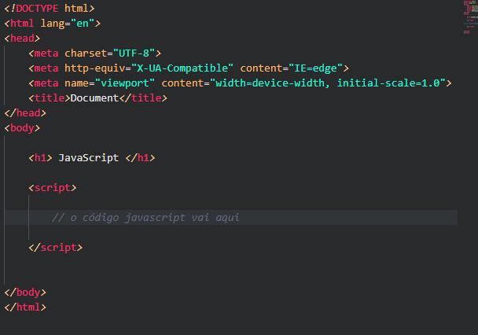
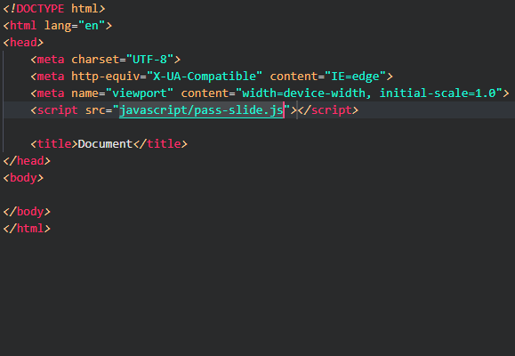
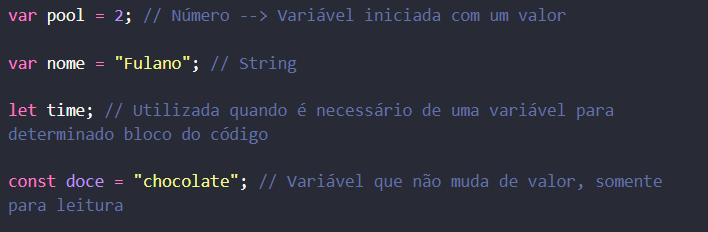
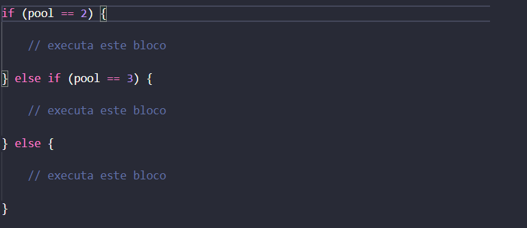
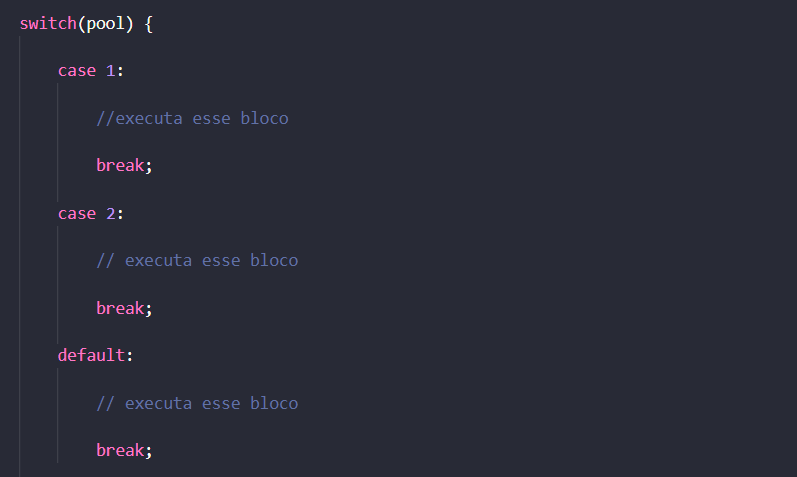
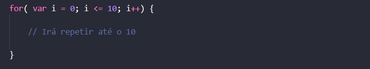
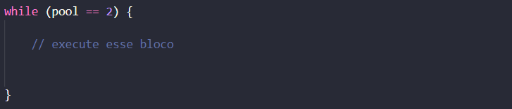
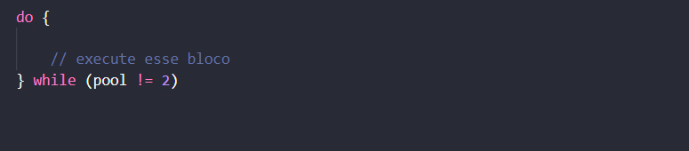
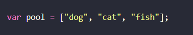
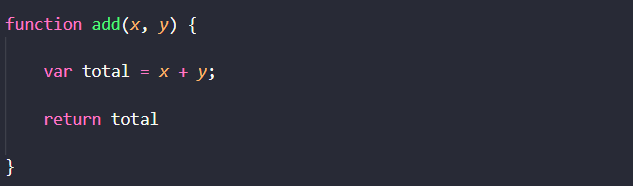

LINGUAGEM DE PROGRAMAÇÃO
JAVASCRIPT
Alex Henrique
Deivson Bruno
Fransini Oliveira
Guilherme Torres
Isabela Neves
Luiz Felipe Andrade
Prontos para aprender JavaScript?
O que é o JavaScript?
• É uma linguagem de programação de alto nível criada, a princípio, para ser executada em navegadores e manipular comportamentos de páginas web.
• JavaScript, originalmente, é uma linguagem de programação client-side, ou seja, é executada do lado do usuário, mais especificamente pelo navegador utilizado por este usuário.
Como surgiu?
• A linguagem de programação Java Script foi criada no ano de 1995 pelo programador Brendan Eich, que na época trabalhava para o grande navegador Netscape;
• No início a linguagem foi batizada com alguns nomes inclusive Live Script, mas depois de um tempo a Netscape teve o auxílio da empresa SUN Microsystems para o desenvolvimento da linguagem. Depois disso a linguagem ficou conhecida por JavaScript, mais por questões estratégicas.
• A organização Microsoft vendo tudo isso então achou uma boa ideia que em vez de auxiliar no desenvolvimento da linguagem, criar uma linguagem em paralelo, a JScript, mas a linguagem rodava somente no Internet Explorer.
• Em 1996 a organização Netscape decidiu se juntar a ECMA Internacional (Associação Europeia dos Fabricantes de computadores) com o objetivo de padronizar a linguagem de modo que ela funcione em todos os navegadores.
Vantagens e desvantagens
Vantagens
• Facilidade de aprendizado;
• Não tem a necessidade de um compilador pois os navegadores interpretam a linguagem por conta própria;
• Javascript é mais leve e responde mais rápido que outras linguagens;
• Ele é compatível com quase todos os navegadores;
• Executa comportamentos específicos em uma página, como cliques e efeitos personalizados;
• JavaScript é gratuito.
Desvantagens
• Visível
• Possuí Vulnerabilidade
• Riscos
• Não compatível
• Reiniciar
Pop-ups
Pop-up é uma janela que abre no navegador da internet quando se acessa uma página na web ou algum link de redirecionamento. Normalmente, esta nova janela apresenta informações de destaque do site, ou publicidades e anúncios.
Inserção do JavaScript
Interno
O interno é utilizado para funções específicas de uma página, mas possuí suas limitações. Sua incorporação deve ser feita utilizando uma tag <script> e fechamento com </script> entre as tags do <head> ou <body>
Externo
O externo é o mais recomendado e mais utilizado, pois a partir dele você possuí toda uma liberdade para escrever seu código em um documento próprio para ele. Assim como o CSS, é criado um "link" para realizar essa inserção.
Sintaxe
• A sintaxe é nada mais do que como escrevemos as instruções que devem ser seguidas pelo programa que está sendo feito, no javascript a sintaxe é bastante semelhante com a linguagem C e Java.
Variáveis
• É utilizado as palavras-chaves, "var", "let", "const", como identificador do JS é necessário que os nomes sigam um padrão começando por uma letra, underline ou cifrão, e o JS é case-sensitive.
• Onde "var" é uma variável iniciada com algum valor.
• O "let" é utilizada quando é necessário uma variável para determinado bloco do código.
• O "const" é uma variável somente para leitura, seu valor não é alterado.
Estrutura de condição
• Uma estrutura que vai direcionar o fluxo de controle do programa, ou seja, dependendo da condição ou valor passado, algo será executado. E se a condição for falsa ele vai para o bloco do else.
Switch
O switch verifica o valor da variável, e caso a condição seja verdadeira o bloco de código será executado.
Estrutura para Loops
Uma estrutura de código que executará um bloco repetidamente até que atinja uma determinada condição.
While
Executa um conjunto de ações enquanto aquela condição for verdadeira.
Do-while
Executa um bloco de ações até que a condição seja falsa.
Arrays
Um objeto que representa um conjunto ordenado de valores numerados.
Funções
Uma função é um objeto que tem um código executável associado a ele, que pode ser executado em qualquer lugar do programa.
Operadores Aritméticos
| Operador | Descrição |
| + | Soma valores |
| - | Subtrai valores |
| * | Multiplica valores |
| / | Divide valores |
| % | Resto da divisão |
| ++ | Incremento |
| -- | Decremento |
Operadores de comparação
| Operador | Descrição |
| > | Maior que |
| < | Menor que |
| >= | Maior ou igual a |
| <= | Menor ou igual a |
| == | Igual a |
| != | Diferente de |
| === | Idêntico a |
| !== | Não idêntico a |
| && | E/and |
| || | Ou/Or |